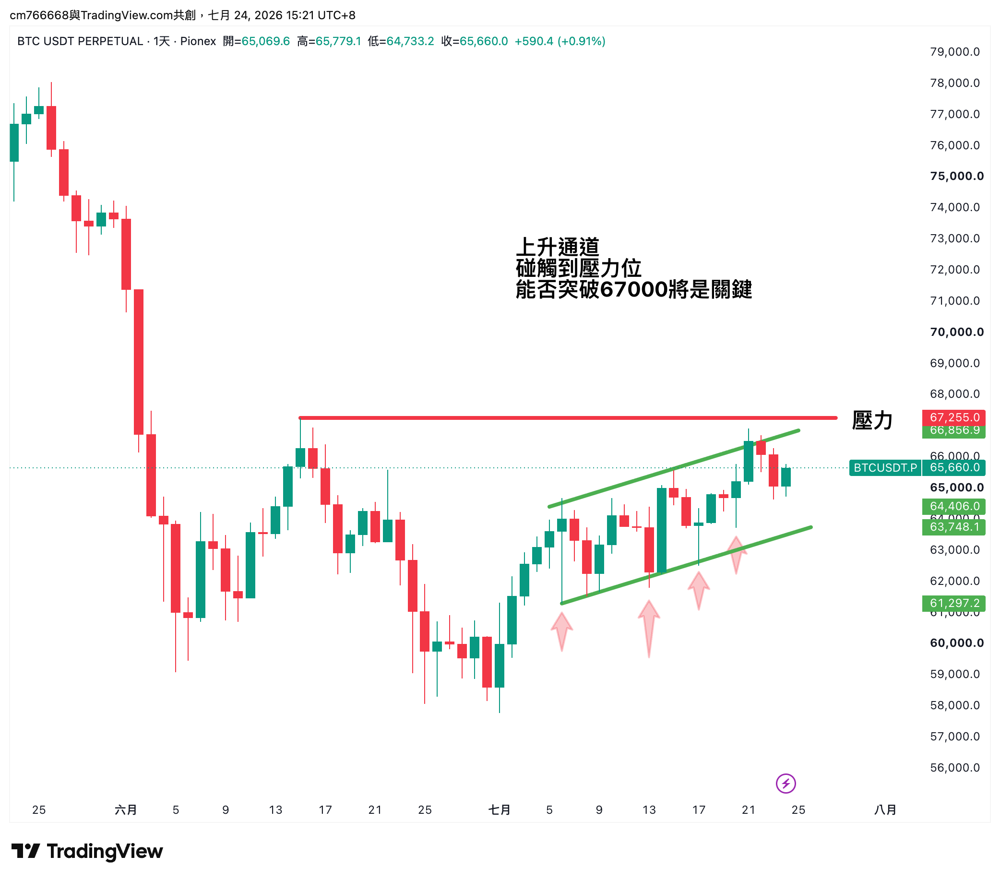

美股在遲疑、BTC 在偷偷爬？
本週市場的「溫差」還沒退
同一個地球，兩種行情。錢沒有消失，只是換了地方——這期用 3 分鐘帶你看懂錢往哪走。
30秒 重點整理
美股：表面小跌，體感很冷
SPY（追蹤標普 500 指數的 ETF）這週收在本週價格區間最下面的 20% 位置，比上週跌了 0.69%——想漲漲不上去、想守守不太住。賣壓集中到週四才出現，把整週的買盤全部打回票。
市場解讀是：錢並沒有真的離開股市，而是同時搬去能源股、公用事業這類防禦色彩重的板塊，這種「資金轉防禦」的訊號，代表市場對後市信心正在降溫。QQQ（那斯達克 100 指數的 ETF）這幾週更慘，目前已經跌破 50 日均線，持有科技股的人真的比較難賺；反而是 IWM（羅素 2000 小型股 ETF）這週最抗跌，還站上 50 日均線。
白話講：不是你的科技股跌得比別人慘，是這禮拜市場的錢暫時搬去比較保守的資產了。這種時候與其急著猜底，不如多看少做，等結構真的轉強再說。
BTC：終於有點「底部的味道」？
BTC 現貨這週上漲 2.25%，低點越墊越高，重新站上 50 日均線——「有人在低接」的痕跡，每次拉回，買盤都在更高的價位接手。
值得留意的是：BTC 永續合約（不是現貨）的資金費率目前貼近於零。市場解讀是，這波反彈主要是現貨買盤在推動，還沒出現槓桿多頭一窩蜂追價的過熱訊號。
但潑個冷水：目前價格仍低於 200 日均線，距離歷史高點還有 34.5% 的上檔空間，現在的定位是「熊市裡的修復段」，把它當反彈做，別當牛市做。在真正站穩 200 日均線之前，先觀察就好，不用急著追。

資金輪動：錢沒有離開，只是搬家了
這是本週最精彩的一段。SPY 只小跌 0.69%，但底下的資金流向卻超級誇張：
💰 錢跑去哪：能源股（XLE）
能源＋公用事業這種防禦股同時變熱，市場解讀是資金在做防禦性布局——投資人開始擔心通膨或經濟成長放緩，寧可先避風頭。
- 本週贏 SPY 3.64 個百分點，3 週來看贏了 12.46 個百分點——不是一日行情，是有計畫地建倉
- 埃克森美孚（XOM）、西方石油（OXY）這種大型油商全面開花，不是單一妖股在拉
💸 錢從哪逃：非必需消費股（XLY）
- 特斯拉（TSLA）這週重挫 -16.06%，是這波賣壓的核心
- 導火線是 7/22 公布的第二季財報：交車量年增 25%、營收也優於預期
- 但獲利大幅不如預期，營業利益率從去年同期的 4.1% 崩到只剩 1.4%，管理層還宣布今年資本支出將超過 250 億美元、未來兩三年持續加碼
- 市場解讀是：大家原本期待「賣得多該賺得多」，結果看到「賣得多、賺得反而更少」，這種預期落差比營收數字本身更嚇人
- 連 Chipotle、Nike 這種原本被認為「穩」的消費品牌也跟著走弱，市場解讀是投資人開始擔心消費者要縮衣節食了
- 本週輸 SPY 5.1 個百分點，3 週來看輸了 6.25 個百分點
能源|走得穩的
XOM 本週 +6.5%
OXY 本週 +5.0%
COP 本週 +4.8%
EOG 本週 +4.0%
CVX 本週 +3.8%
非必需消費|正在被倒貨的
TSLA 本週 -16.1%
CMG 本週 -7.1%
NKE 本週 -6.3%
AMZN 本週 -5.5%
BKNG 本週 -4.9%
名單依本週相對表現排序，只列方向、不列進出場建議。想知道某一檔的關鍵價位，留言點名。
下週怎麼看
- SPY 若收復 745（50日均線）→ 虛驚一場；連續站不回 → 修正可能加深
- BTC 永續合約的資金費率如果快速墊高轉強，代表槓桿多頭在追價，短線要留意過熱風險；BTC 現貨若跌破本週低點 63,720，這波修復可能提前結束
- 能源股（XLE）這週漲最兇，下週能不能繼續稱冠？如果可以，市場解讀是這可能變成下半年的主線類股之一（推測，非定論）
- 非必需消費股（XLY）若持續破位，「經濟軟著陸」這個市場普遍在賭的劇本可能要重新評估
換你說說
本週的「溫差行情」你站哪邊？
留言告訴我你選哪個+為什麼，下週我挑幾個留言來聊 👇
另外：你希望下週多分析哪個標的？留言點菜，票多的加菜。